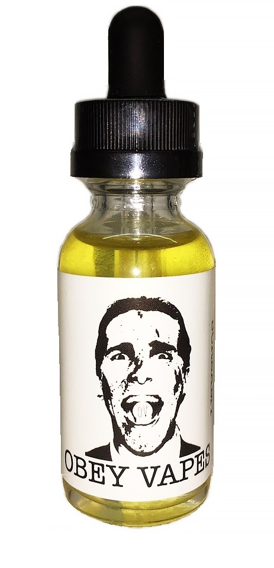
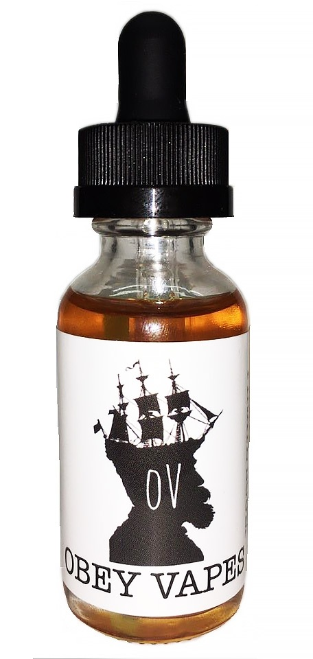
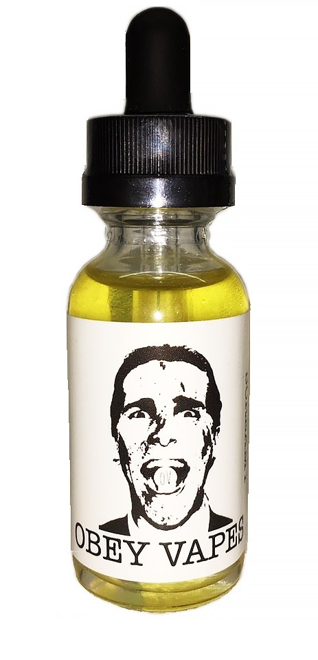
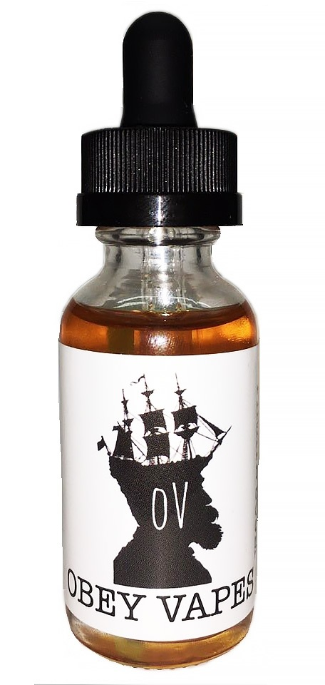
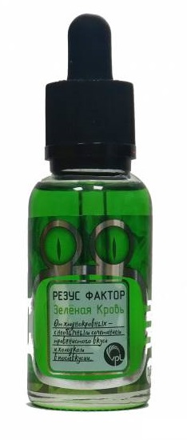
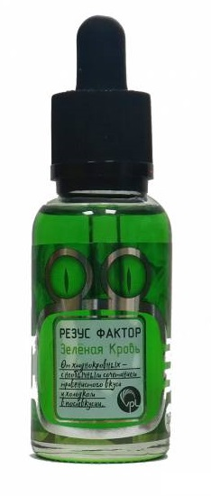

В России и ближнем зарубежье пик популярности электронных сигарет пришелся на 2016 год к началу 2018 года рынок стал наиболее насыщенным девайсами, из-за чего и произошёл спад популярности, так как часть вейперов обратно перешли на аналоговые сигареты, а кто-то остался верен пару. Однозначно, отток тех, кто рьяно ринул в vape был значительным, так как даже Vape.ru спустя сильный хайп был закрыт.
В достаточно популярном направлении вейпа, существует огромное количество так называемых "расходников": жидкости, испарители, вата. Жидкость для "вейпа" одна из главных составляющих приятного пара, ведь без вкусной и ароматной жидкости, и "попарить" нормально не получится.
После спада популярности многие бренды жидкости вовсе ушли с рынка, а у той части которая осталась, "пропали" так сильно полюбившиеся людям вкусы. Многие из которых навсегда остались в памяти многих стариков вейпа.
S.O.V.A
О производителе вейп-жидкости SOVA, к сожалению ничего не удалось найти. Но можем предоставись описание вкусов этих жидкостей.
YOGA VAPE
Компания родом из Сибири, которая позволила насладиться глубокими вкусами ягод, мяты, пирогов и многим другим.
S[B]R
Линейка жидкости SBR от YOGA VAPE позволила попробовать Сибирь на вкус.
HOLY SH#T
Данную жидкость даже сейчас можно приобрести, только теперь еще появились солевые виды этой фирмы. Монашки все еще радуют людей.

OBEY Vapes
Жидкость бренда Obey Vapes (Обэй Вейпс) производится в Америке и имеет большое число поклонников по всему миру.
 




CLOUDFUCKERS
Отличный вкус и насыщенное послевкусие. Очень проработанные вкусы, жаль что больше не производится...

VPL Резус Фактор
Эту необычную жидкость создает компания "SvoёMesto", довольно интересные вкусы с яркой концепцией.

 
